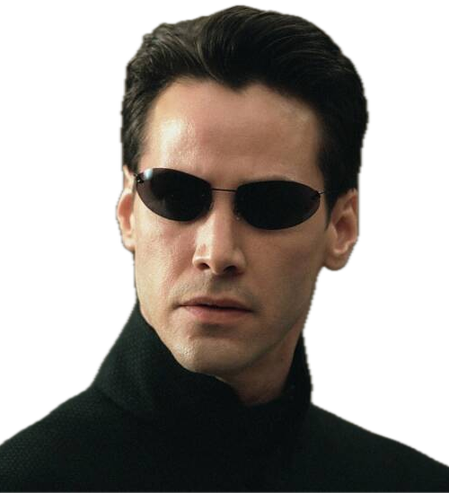

Alias: Neo | Status: Alive (Resurrected)
DOB: March 11, 1962 / Sept 13, 1971 | Origin: Capital City, USA
Demographics: Male, Caucasian, 1.85m (6'1")
whatisthematrix.com/universe/Legendary Redpill Resistance operative of the hovercraft Nebuchadnezzar, carrying the Matrix's source code known as the Prime Program. Prophesied by The Oracle to be The One, an individual capable of freeing humanity from their unsuspecting imprisonment within the Matrix. Former Bluepill who evolved to freely manipulate simulated reality, culminating in an unprecedented truce between humanity and the Synthients during the Machine War.
Owen Patterson High School & Central West Junior High School
Excelled in science, math, and computer courses while displaying a strong aptitude for literature and history. Active and respected member of the school community through involvement in football and hockey.

Matrix Manipulation (The Prime Program):
Possesses administrator-level authority over the simulated reality of the Matrix. Exhibits superhuman telekinesis, flight at extreme supersonic speeds (capable of generating destructive sonic booms), and the ability to stop, explode, and redirect bullets or missiles in mid-air. Demonstrated the ability to revive the recently deceased by manually restarting the heart.
Martial Arts Mastery:
Capable of running an unprecedented number of combat programs simultaneously. Master of Kung Fu, Kempo, Jujitsu, Eskrima, Drunken Boxing, Jeet Kune Do, Krav Maga, Budo, and Taekwondo.
Source Connection & Real World Powers:
Possesses a heightened awareness of the simulated nature of the Matrix, allowing for the easy detection of Agents, Exiles, and anomalous programming. Exhibits a limited form of precognition ("seeing the world without time"). Retains wireless connectivity to the Source in the Real World, allowing him to sense, disable, and destroy Synthient machines (Sentinels) through localized EMP-like bursts.